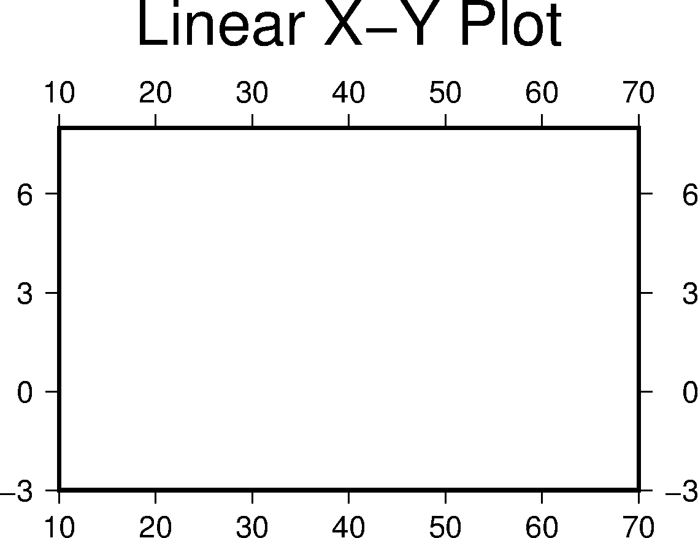
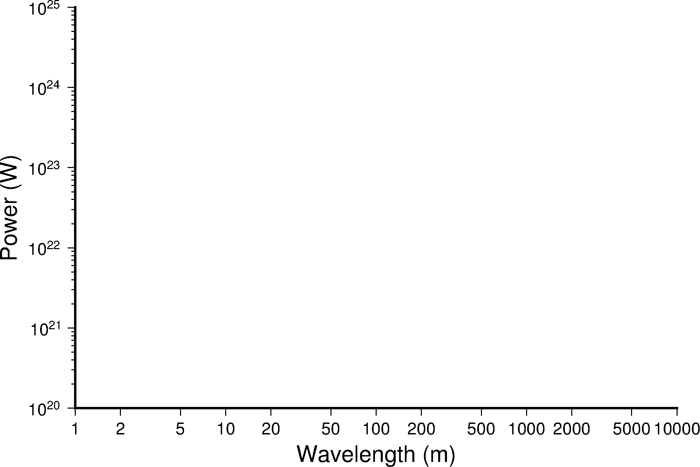
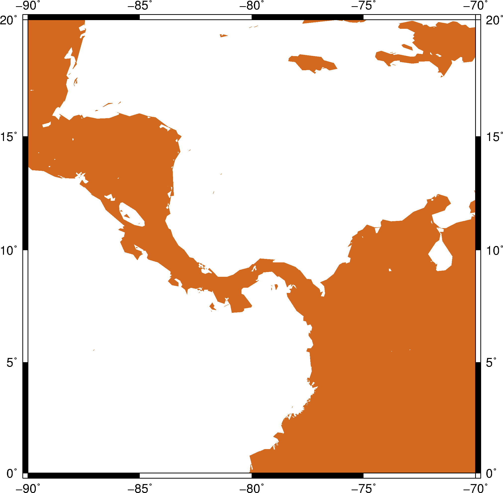

4.1 入门示例1¶
这一节将使用GMT的 psbasemap 和 pscoast 模块绘制简单的坐标轴以及世界地图。
4.1.1 线性投影¶
GMT可以绘制最简单的线性X-Y图。
gmt psbasemap -R10/70/-3/8 -JX8c/5c -Bx10 -By3 -B+t"Linear X-Y Plot" > GMT_tutor1_1.ps
绘图结果如图所示：

{kind=link}
图 4.1 线性X-Y图
在这个示例中：
-R10/70/-3/8设置了X轴范围是10到70，Y轴范围为-3到8-JX8c/5c指定了整张图为线性投影，图的宽度（X轴长度）为8厘米，图的高度（Y轴长度）为5厘米-Bx10 -By3分别设置了X、Y轴标注以及刻度的间隔为10和3-B+t"Linear X-Y Plot"为整张图添加了标题> GMT_tutor1_1.psGMT绘图模块的输出是PS代码，因而需要使用重定向符号>将PS代码输出到PS文件中
你可以尝试如下操作以增进对各个选项的理解：
- 修改
-JX中的值 - 修改
-Bx和-By中的值 - 修改
-R中的值 - 增进
-P选项并查看效果
4.1.2 对数投影¶
下面展示如何用GMT绘制对数X-Y图。
gmt psbasemap -R1/10000/1e20/1e25 -JX15cl/10cl -Bxa2+l"Wavelength (m)" -Bya1pf3+l"Power (W)" -BWS > GMT_tutor1_2.ps
绘图结果如图所示：

{kind=link}
图 4.2 对数X-Y图
此示例中：
-R1/10000/1e20/1e25设置了X和Y轴的范围-JX15cl/10cl中l表明用对数轴表示-B选项中+l用于指定每个轴的轴标签-BWS表示只绘制图边框左（W）和下（S）边框
试试看：
- 将
-Bya1pf3改成-Bya1f3 - 将
-BWS改成-BWSen、-BWSEN、-BwsEN等
4.1.3 区域地图¶
GMT自带了海岸线数据，通过 pscoast 模块可以直接调用。
gmt pscoast -R-90/-70/0/20 -JM6i -P -Ba -Gchocolate > GMT_tutor1_3.ps
绘图结果如图所示：

{kind=link}
图 4.3 区域地图
此示例中使用 pscoast 绘制了拉丁美洲区域的海岸线。
-R-90/-70/0/20指定了地理区域的范围-JM6i表示使用墨卡托投影，地图的宽度为6英寸，高度由投影自动决定-Ba会根据地理范围以及图片大小自动计算出适合的标注和刻度间隔-Gchocolate将陆地区域填充颜色chocolate
pscoast 还有很多常用的选项：
-D选项海岸线数据的精度-G设置陆地区域的填充色-S设置海洋、湖泊区域的填充色-W绘制海岸线，并设置海岸线的画笔属性-N绘制政治边界-I绘制河流-L在图上绘制比例尺
试试看：
- 加上
-V选项 - 修改
-R选择中的地理范围 - 加上
-W1p选项 - 加上
-N1/thickest -N2/thinnest选项
{kind=link}